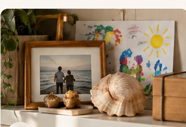
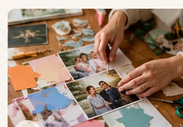

Здесь можно бережно обращаться с воспоминаниями, чувствами и тем, что важно сохранить. Не нужно торопиться или искать правильный способ переживать утрату.
Потеря близкого человека меняет не только наши дни. Она может изменить привычное представление о времени, доме, отношениях и будущем. Не существует единственного правильного способа проживать горе. Здесь можно не торопиться, не искать нужных слов и не требовать от себя немедленного восстановления.

01Выберите спокойное место и один или несколько предметов, связанных с близким человеком: фотографию, рисунок, ткань. Расположите их так, как подходит вам сейчас. Это пространство может быть временным; его не обязательно сохранять неизменным.
Вопрос для себя: что мне хочется сохранить в памяти сегодня?
Это может быть полка, столик или небольшой участок стены — там, где вам спокойно.
Возьмите один-два предмета, фотографию или рисунок. Не нужно собирать всё сразу.
Попробуйте разные сочетания. Оставьте только то, что сейчас хочется видеть.
Что изменилось, когда вы увидели эти вещи рядом? Можно записать пару слов.
Возьмите лист бумаги и запишите воспоминание, вопрос, благодарность или несколько слов, которые хочется сказать. Не нужно искать правильного окончания. Письмо можно оставить себе или вернуться к нему позже.
Вопрос для себя: что я хочу сказать сейчас?
Возьмите бумагу или заметки в телефоне. Пишите в своём темпе.
Например: «Сегодня я вспоминаю…», «Мне хочется рассказать тебе…» или «Спасибо за…».
Не исправляйте и не оценивайте текст. Можно остановиться после одной строки.
Сохраните, сложите в конверт или отложите. Ничего не нужно отправлять.

03Выберите изображения, фотографии, кусочки ткани, цвета и слова, которые напоминают о близком человеке. Попробуйте расположить их на листе, оставляя столько свободного пространства, сколько хочется. Не требуется оценивать красоту результата.
Вопрос для себя: какой образ хочется оставить рядом?
Подойдут фотографии, бумага, ткань, журнальные вырезки, карандаши и клей.
Выбирайте не самые красивые, а те, которые вызывают воспоминание или чувство.
Разложите фрагменты на листе, оставляя пустое пространство там, где оно нужно.
Какую историю рассказывает коллаж? Есть ли в нём деталь, которую хочется сохранить?
В книге «Свет маяка» Анна Анопова соединяет личный опыт, психологическое осмысление и арт-терапевтические упражнения. Полную книгу добавим в этот раздел после получения утверждённой финальной редакции основной части.
Уточнить информацию или задать вопрос специалисту можно удобным для вас способом.